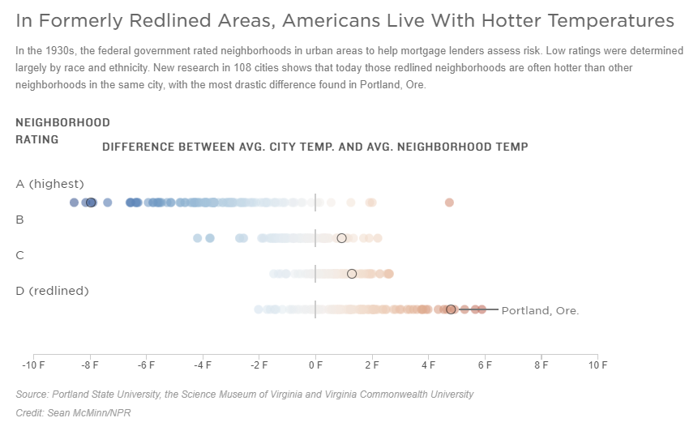
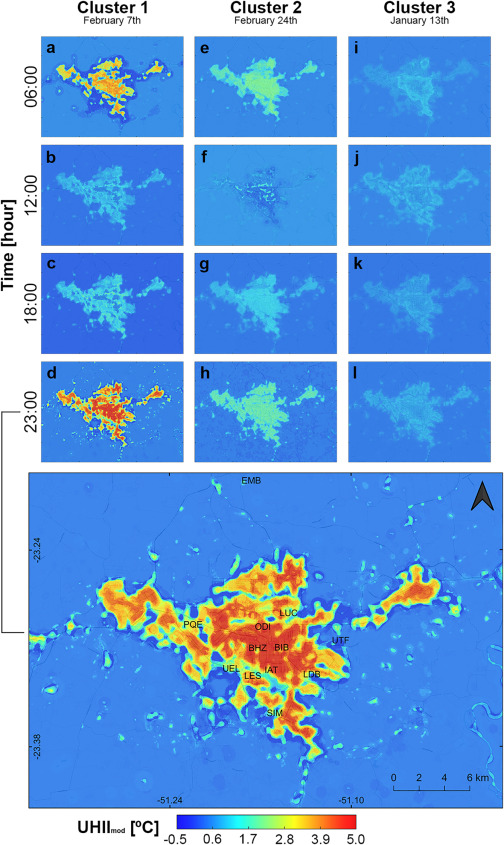

8 Chapter 8 - Temperature
8.1 Summary
8.1.1 Urban Heat Island
- What is UHI?
- urban areas obtain comparatively higher atmospheric and surface temperatures than surrounding rural areas
- Factors cause UHI
(1)Main factors
- More dark surfaces that retain heat
- Less vegetation that cools the environment (evapotranspiration and solar blocking)
(2)Other factors
- A low Sky View Factor (SVF)
- Air speed, cloud cover, cyclic solar radiation, building material type and anthropogenic energy

8.1.2 Policy
8.1.2.1 Global
- New Urban Agenda = standards and principles for planning, construction, development, management and urban improvement(Point 37,54,79)
- Sustainable Development Goals (SDG) = targets with measurable indicators for monitoring(Goal 11)
- Beat The Heat Handbook(Chapter 5)
8.1.2.2 Local
- Superblocks
- Medellín Green Corridors
- Sydney’s western suburbs
8.1.2.3 What prooblem these policy have?
- They don’t actually give specifics, like what sort of planning rules need to be changed.
- If you are a planner how should you consider applications given this guidance / requirements
- Is it up to metropolitan level / national level and not individual planning applications
8.1.3 Data
What datasest tell us? It is related to temperature?

8.1.4 Vegetation area selection
- Fremantle’s Urban Forest Plan
Fremantle selected the areas based on topography and geology- two aspects that influence tree species from and density. But they did not consider the size of trees.

8.1.5 Reconsideration
Based on local conditions, MacLachlan and his team focus on Mean radiant temperature (MRT).

8.1.6 Approaching projects
- Search for EO data
- Identify an issue (look at local policy documents)
- Look at global policy documents
- What can be solved with the data?
- What could this data contribute to another question? (e.g. including it as a variable)
- How could the remotely sensed data be included within a data workflow
- Consider Anything else as long as it includes EO data …
8.2 Application
- Fine-scale modeling of the urban heat island: A comparison of multiple linear regression and random forest approaches(Oukawa et al., 2022)
This paper develops specific daytime and night-time multiple linear regression (MLR) and random forest (RF) models to analyse and predict the spatial and temporal evolution of urban heat island intensity (UHII), using air temperature (Tair) as a response variant. The study area was chosen to be Londrina, a city in southern Brazil. The study is rich in data, with in situ Tair data and a comprehensive pool of predictive variables - including land cover, population, traffic, urban geometry, weather data and atmospheric vertical indexes. The steps of the first model MLR are (1) the highest-ranking variable (most correlated with the response variable) of each sub-category was identified; (2) variables within each sub-category that were correlated (Pearson’s |R| > 0.60) with the highest-ranking variable were removed; (3) the remaining variables were verified and removed if they did not match the variance inflation factor (VIF) < 3. The second random forest model, constructed by averaging predictors learned from regression or classification trees. Each tree is built from multiple bootstrapped datasets and, at each split, a random sample of m predictors are selected as candidates from the full array. Unlike bagging, this method de-correlates individual trees, reducing variance in the dataset, since they are not all dependent on the same data or same variables. It was concluded that the MLR model explained a lower percentage of the variance, which could be attributed to the complex non-linear interactions of the selected predictor variables with Tair. On the other hand, the RF model outperformed the MLR model and was able to explain a larger percentage of the variance during the day and night and under different weather conditions. In addition, the RF model is able to capture and map the fine-scale spatial and temporal variability of UHII across the study area. Such machine learning techniques could provide urban planners with a reliable framework for predicting and mitigating the impacts of the UHI. While this may be challenging in developed cities, the problem of improving the microclimate of new communities can be avoided by avoiding the use of large areas of impervious material.

- Remote sensing based analysis of urban heat islands with vegetation cover in Colombo city, Sri Lanka using Landsat-7 ETM+ data((Senanayake et al., 2013))
In this study, the thermal band (10.40-12.50 lm) of Landsat-7 ETM+ images acquired on 3 different dates covering the city of Colombo, Sri Lanka, was analysed for spatial and temporal identification of the UHI. The vegetation cover of Colombo City was extracted using the NDVI method and subsequently examined using the distribution of LST. Based on the distribution of LST and the availability of vegetation cover, a deductive index was defined to identify environmentally critical areas in Colombo City. The following conclusions were reached in this paper, firstly based on surface temperature and vegetation cover, Colombo Harbour and the surrounding areas in the north-western part of the city of Colombo were identified as the most environmentally critical areas. Areas with extensive asphalt paving were then identified as the main source of elevated surface temperatures. In addition, the Colombo-Galle A2 road appears to be an environmentally critical area based on vegetation cover and surface temperature availability. The advantage of this project is that the methodology is basic and widely applicable and can be applied to other cities to determine the formation of the UHI.
8.3 Reflection
This week’s learning has been very helpful to me as the topic of the group work assignment is also addressing the Urban Heat Island effect. I have learnt this week to think about the kind of questions that need to be considered when developing a project and have practiced exploring how data can explain a research question. I learnt about all the satellite data that can be used to extract surface temperatures and the pros and cons between them. For example, thermal infrared sensor data can measure reflected and emitted radiation from the surface. This radiation contains information about the surface temperature, which can be deduced by calculating the intensity of the radiation. In addition to this I learnt how to extract temperature results. Also, thanks to Andy for the project examples, which broadened my thinking about the heat island effect. Reflecting on what I have learnt this week, I have come to the conclusion that it is important to focus on demographic as well as social factors when addressing urban heat island issues, especially when identifying targets.
8.4 Reference
Oukawa, G.Y., Krecl, P., Targino, A.C., 2022. Fine-scale modeling of the urban heat island: A comparison of multiple linear regression and random forest approaches. Sci. Total Environ. 815, 152836. https://doi.org/10.1016/j.scitotenv.2021.152836
Senanayake, I.P., Welivitiya, W.D.D.P., Nadeeka, P.M., 2013. Remote sensing based analysis of urban heat islands with vegetation cover in Colombo city, Sri Lanka using Landsat-7 ETM+ data. Urban Clim. 5, 19–35. https://doi.org/10.1016/j.uclim.2013.07.004